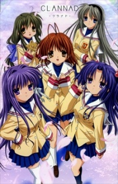
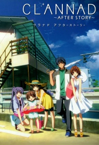

Clannad
 Tomoya Okazaki is a delinquet who thinks life has nothing exciting to offer. So, he skips school and plans to waste his high school days away. One day, he encounters Nagisa Furukawa while heading too school. She catches his attention and after brushing off her comment about them being friends, starts to notice her more and more at school. Eventually, he gives in, becomes her friend, and helps her achieve her goal of reviving the school's drama club. As he spends more and more time with Nagisa and friends, Tomoya realizes that maybe life has more to offer than he thought.
After Story
Directly following Tomoya's confession to Nagisa, they begin to grow closer. As they start their life together, obstacles and unforeseen happenings occur.